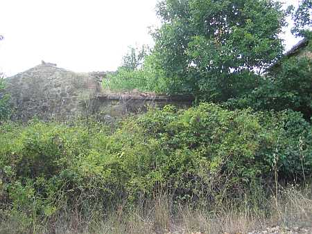
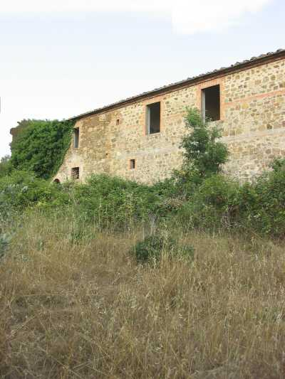
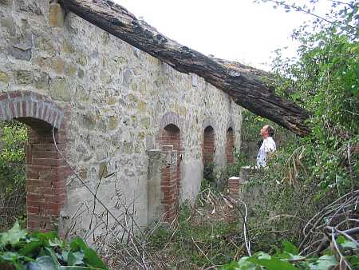
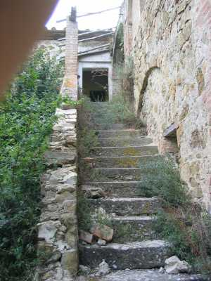

Podere della fattoria di Passeggeri, posto sulla strada che conduce alla villa, poco prima del podere detto Passeggeri. Si nota sulla sinistra, sommersa tra il verde di una vegetazione invadente, la sua grande struttura.

La sua nascita è abbastanza recente e risale agli anni 1822/23. Venne edificato da Santi Bandini sul luogo detto appunto Bellavista, dove prima sorgeva una capanna agricola. La sua storia si identifica con quella della fattoria e i suoi proprietari sono gli stessi. Cambiano invece i contadini che vi hanno dimorato fino agli anni Sessanta del Novecento, quando venne abbandonato e conobbe una veloce rovina dell’edificio che perdura tuttora. Il nucleo iniziale venne ampliato negli anni 1920/22 dal senatore Sarrocchi che costruì modernamente i castri dei maiali (1929), i servizi in casa e rimodernò le stalle, con tanto di targa ricordo.

1929: anno di costruzione dei castri

Costruito su due piani si accede all’abitazione con una monumentale scala diritta, con scalini in pietra, che introduce a spaziosi e numerosi ambienti. Oggi si presenta diroccata. La prima famiglia di Bellavista risulta essere, dall’elenco del 1824, quella di Paolo Tognazzi che vi abitò fino al 1843 quando lasciò a Francesco Montigiani. Nel 1884 figurano i Becatti, poi i Maremmi e quindi i Pierini dal 1892 al 1898, spoderati, dal 3 marzo 1898, dai Gambassi che vi rimangono per ben ventisei anni. Giunsero quindi la conosciuta famiglia dei Vettori con una permanenza dal 1924 al 1938 per lasciare poi il podere ai Vannoni. Dopo la seconda guerra si insediano i Cristofani e ultimi la famiglia Masiero. Prima dell’ampliamento ricordato del 1922 il podere ospitò famiglie di medie dimensioni che variavano dai sei agli undici componenti, ma dal 1936 i Vettori sono in quattordici e i Vannoni in quindici..
L'aia di Bellavista
Capanna di Bellavista
Stalla di Bellavista
Qui si trovava il vecchio focolare
Capitolo successivo Belvedere
Inizio pagina
Vai all'Indice dei Capitoli